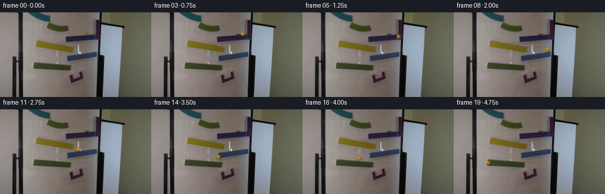
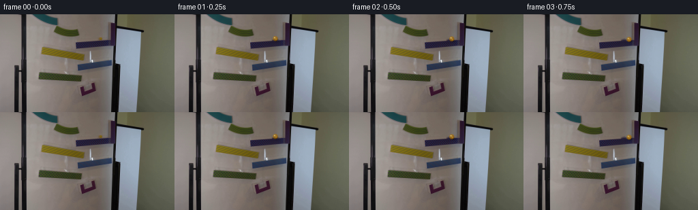
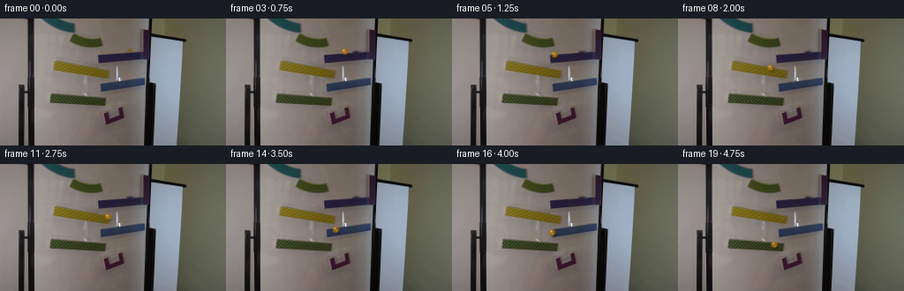

CODING AGENTS AS PIXEL WORLD MODELS
traex/GPT-5.6-Sol · 0106
点击播放 · 原生 RGB 像素
逐轮保存的候选
回放视频、检查图与代码变化。
每份候选均可单独播放。实际图片检查记录在下方工具轨迹中。
候选 01播放与检查图
点击播放 · 原生 RGB 像素


展开代码变化
--- 上一保存版本
+++ 本次保存版本
@@ -0,0 +1,209 @@
+"""Generate the requested locked-camera magnetic marble-run sequence.
+
+The photograph remains untouched except for removal/re-rendering of the small
+yellow marble after frame zero. Motion and rendering are deterministic and
+use only the supplied first frame.
+"""
+
+from pathlib import Path
+
+import cv2
+import numpy as np
+from PIL import Image
+
+import artifact_io
+
+
+ROOT = Path(__file__).resolve().parent
+W, H = 256, 144
+
+
+def clean_plate(source: np.ndarray) -> np.ndarray:
+ """Remove the marble at (147, 36), retaining the photographed ramp."""
+ # The mask is deliberately tight: the original marble occupies x143..151,
+ # y33..38. TELEA interpolation continues the nearby whiteboard/ramp tones.
+ mask = np.zeros((H, W), np.uint8)
+ cv2.ellipse(mask, (147, 36), (5, 4), 0, 0, 360, 255, -1)
+ bgr = cv2.cvtColor(source, cv2.COLOR_RGB2BGR)
+ cleaned = cv2.inpaint(bgr, mask, 3.0, cv2.INPAINT_TELEA)
+ return cv2.cvtColor(cleaned, cv2.COLOR_BGR2RGB)
+
+
+def shade_shadow(frame: np.ndarray, cx: float, cy: float, contact: float) -> np.ndarray:
+ """Cast a small soft shadow onto the whiteboard/ramp behind the marble."""
+ out = frame.astype(np.float32)
+ rad = 7
+ x0 = max(0, int(np.floor(cx)) - rad)
+ x1 = min(W, int(np.floor(cx)) + rad + 1)
+ y0 = max(0, int(np.floor(cy)) - rad)
+ y1 = min(H, int(np.floor(cy)) + rad + 1)
+ yy, xx = np.mgrid[y0:y1, x0:x1].astype(np.float32)
+ # A contact shadow is compact; during a drop it becomes softer/lighter.
+ sigma_x = 2.25 + 0.75 * (1.0 - contact)
+ sigma_y = 1.45 + 0.85 * (1.0 - contact)
+ sx, sy = cx + 1.15, cy + 2.25
+ a = (0.32 * (0.45 + 0.55 * contact)) * np.exp(
+ -0.5 * (((xx - sx) / sigma_x) ** 2 + ((yy - sy) / sigma_y) ** 2)
+ )
+ a = a[..., None]
+ out[y0:y1, x0:x1] *= 1.0 - a
+ return np.clip(out, 0, 255).astype(np.uint8)
+
+
+def rgba_layer(cx: float, cy: float, radius: float, angle: float,
+ velocity: tuple[float, float]):
+ """Return a supersampled premultiplied RGBA layer for an amber glass ball."""
+ scale = 4
+ pad = 8
+ x0 = int(np.floor(cx)) - pad
+ y0 = int(np.floor(cy)) - pad
+ bw = bh = pad * 2 + 1
+ yy, xx = np.mgrid[0:bh * scale, 0:bw * scale].astype(np.float32)
+ gx = x0 + (xx + 0.5) / scale
+ gy = y0 + (yy + 0.5) / scale
+
+ premul = np.zeros((bh * scale, bw * scale, 3), np.float32)
+ alpha_total = np.zeros((bh * scale, bw * scale), np.float32)
+
+ def over(color: np.ndarray, alpha: np.ndarray):
+ nonlocal premul, alpha_total
+ alpha = np.clip(alpha, 0.0, 1.0)
+ premul = premul * (1.0 - alpha[..., None]) + color * alpha[..., None]
+ alpha_total = alpha_total + alpha * (1.0 - alpha_total)
+
+ # A restrained shutter streak makes fast 4-fps travel read as continuous,
+ # while retaining a crisp, scientifically legible marble position.
+ vx, vy = velocity
+ speed = float(np.hypot(vx, vy))
+ if speed > 3.0:
+ ux, uy = vx / speed, vy / speed
+ extent = min(3.2, speed * 0.18)
+ for k in range(5, 0, -1):
+ q = k / 5.0
+ bx, by = cx - ux * extent * q, cy - uy * extent * q
+ d = np.hypot(gx - bx, gy - by)
+ aa = np.clip(radius + 0.35 - d, 0, 1) * (0.023 + 0.017 * (1 - q))
+ col = np.zeros((*d.shape, 3), np.float32)
+ col[:] = (177, 124, 14)
+ over(col, aa)
+
+ dx, dy = gx - cx, gy - cy
+ d = np.hypot(dx, dy)
+ edge = np.clip(radius + 0.45 - d, 0.0, 1.0)
+ inside = np.clip(1.0 - d / radius, 0.0, 1.0)
+
+ # Translucent honey-colored body. Upper-left illumination follows the
+ # lighting already present in the source photograph.
+ directional = np.clip((-0.62 * dx - 0.78 * dy) / radius, -1.0, 1.0)
+ body_rgb = np.empty((*d.shape, 3), np.float32)
+ body_rgb[..., 0] = 172 + 25 * directional + 15 * inside
+ body_rgb[..., 1] = 112 + 23 * directional + 16 * inside
+ body_rgb[..., 2] = 8 + 12 * directional + 13 * inside
+ body_alpha = edge * (0.57 + 0.16 * (1.0 - inside))
+ over(body_rgb, body_alpha)
+
+ # Dark amber rim gives the glass sphere a distinct silhouette.
+ rim = np.exp(-((d - radius * 0.79) / (radius * 0.15)) ** 2) * edge * 0.24
+ rim_rgb = np.zeros((*d.shape, 3), np.float32)
+ rim_rgb[:] = (87, 55, 5)
+ over(rim_rgb, rim)
+
+ # Rotating curved inclusion inside the glass subtly communicates rolling.
+ ca, sa = np.cos(angle), np.sin(angle)
+ rx = dx * ca + dy * sa
+ ry = -dx * sa + dy * ca
+ swirl_dist = np.abs(ry - 0.20 * (rx * rx / max(radius, 0.1) - radius * 0.35))
+ swirl = (swirl_dist < 0.34) & (np.abs(rx) < radius * 0.64) & (d < radius * 0.78)
+ swirl_a = swirl.astype(np.float32) * 0.23
+ swirl_rgb = np.zeros((*d.shape, 3), np.float32)
+ swirl_rgb[:] = (255, 192, 34)
+ over(swirl_rgb, swirl_a)
+
+ # Bright specular fleck and lower caustic characteristic of yellow glass.
+ hi = np.exp(-(((dx + radius * 0.34) / (radius * 0.22)) ** 2 +
+ ((dy + radius * 0.39) / (radius * 0.19)) ** 2)) * edge * 0.83
+ hi_rgb = np.zeros((*d.shape, 3), np.float32)
+ hi_rgb[:] = (255, 246, 177)
+ over(hi_rgb, hi)
+ caustic = np.exp(-(((dx - radius * 0.27) / (radius * 0.34)) ** 2 +
+ ((dy - radius * 0.39) / (radius * 0.20)) ** 2)) * edge * 0.42
+ c_rgb = np.zeros((*d.shape, 3), np.float32)
+ c_rgb[:] = (255, 184, 20)
+ over(c_rgb, caustic)
+
+ # Area-downsample premultiplied color and coverage for clean subpixel edges.
+ premul = cv2.resize(premul, (bw, bh), interpolation=cv2.INTER_AREA)
+ alpha_total = cv2.resize(alpha_total, (bw, bh), interpolation=cv2.INTER_AREA)
+ straight = premul / np.maximum(alpha_total[..., None], 1e-6)
+ return x0, y0, straight, alpha_total
+
+
+def draw_marble(frame: np.ndarray, cx: float, cy: float, angle: float,
+ velocity: tuple[float, float], contact: float) -> np.ndarray:
+ out = shade_shadow(frame, cx, cy, contact).astype(np.float32)
+ x0, y0, rgb, alpha = rgba_layer(cx, cy, 3.65, angle, velocity)
+ h, w = alpha.shape
+ xa, ya = max(0, x0), max(0, y0)
+ xb, yb = min(W, x0 + w), min(H, y0 + h)
+ if xa < xb and ya < yb:
+ lx0, ly0 = xa - x0, ya - y0
+ lx1, ly1 = lx0 + xb - xa, ly0 + yb - ya
+ a = alpha[ly0:ly1, lx0:lx1, None]
+ out[ya:yb, xa:xb] = (
+ out[ya:yb, xa:xb] * (1.0 - a) + rgb[ly0:ly1, lx0:lx1] * a
+ )
+ return np.clip(out, 0, 255).astype(np.uint8)
+
+
+def make_frames() -> np.ndarray:
+ source = np.asarray(Image.open(ROOT / "first_frame.png").convert("RGB"), dtype=np.uint8)
+ assert source.shape == (H, W, 3)
+ plate = clean_plate(source)
+
+ # Sampled at the required constant 4 fps. The short vertical sections are
+ # ballistic transfers between ramps; along-ramp spacing increases slightly
+ # under gravity before each transfer.
+ positions = np.array([
+ (147.0, 35.8), # source frame: marble is still held at release point
+ (148.0, 35.8),
+ (150.8, 36.2),
+ (155.0, 37.0),
+ (159.7, 38.2),
+ (162.7, 41.5), # leaves the upper ramp
+ (163.0, 49.0),
+ (162.2, 61.8), # lands at high end of the opposing blue ramp
+ (158.5, 63.3),
+ (151.4, 64.7),
+ (142.3, 66.2),
+ (132.0, 67.8),
+ (122.1, 69.5),
+ (115.2, 71.5),
+ (114.0, 81.0), # drops onto the lower magnetic ramp
+ (107.3, 82.1),
+ (95.2, 83.2),
+ (81.2, 84.4),
+ (67.2, 86.1),
+ (58.5, 91.0), # begins to leave its low end
+ ], dtype=np.float32)
+ contact = np.array([
+ 1, 1, 1, 1, 1, .45, .20, .80, 1, 1, 1, 1, 1, .70, .45, 1, 1, 1, 1, .55
+ ], dtype=np.float32)
+
+ frames = np.empty((20, H, W, 3), dtype=np.uint8)
+ frames[0] = source # contract: pixel-identical first frame
+ rolling_angle = 0.0
+ for i in range(1, 20):
+ vx, vy = positions[i] - positions[i - 1]
+ if contact[i] > 0.65:
+ rolling_angle += float(np.hypot(vx, vy) / 3.65)
+ frames[i] = draw_marble(
+ plate, float(positions[i, 0]), float(positions[i, 1]), rolling_angle,
+ (float(vx), float(vy)), float(contact[i])
+ )
+ return frames
+
+
+if __name__ == "__main__":
+ video = make_frames()
+ artifact_io.save(video, ROOT)
+
候选 02播放与检查图
点击播放 · 原生 RGB 像素

展开代码变化
--- 上一保存版本
+++ 本次保存版本
@@ -160,33 +160,34 @@
assert source.shape == (H, W, 3)
plate = clean_plate(source)
- # Sampled at the required constant 4 fps. The short vertical sections are
- # ballistic transfers between ramps; along-ramp spacing increases slightly
- # under gravity before each transfer.
+ # Sampled at the required constant 4 fps. The blue ramps descend left and
+ # the yellow/green ramps descend right, so the route alternates direction.
+ # Short diagonal sections preserve momentum during the ballistic transfers;
+ # along-ramp spacing increases under gravity before each transfer.
positions = np.array([
(147.0, 35.8), # source frame: marble is still held at release point
- (148.0, 35.8),
- (150.8, 36.2),
- (155.0, 37.0),
- (159.7, 38.2),
- (162.7, 41.5), # leaves the upper ramp
- (163.0, 49.0),
- (162.2, 61.8), # lands at high end of the opposing blue ramp
- (158.5, 63.3),
- (151.4, 64.7),
- (142.3, 66.2),
- (132.0, 67.8),
- (122.1, 69.5),
- (115.2, 71.5),
- (114.0, 81.0), # drops onto the lower magnetic ramp
- (107.3, 82.1),
- (95.2, 83.2),
- (81.2, 84.4),
- (67.2, 86.1),
- (58.5, 91.0), # begins to leave its low end
+ (145.3, 36.0),
+ (141.0, 36.6),
+ (134.6, 37.5),
+ (126.4, 39.0),
+ (116.2, 41.0), # low end of the upper blue ramp
+ (108.1, 47.8),
+ (102.6, 54.9), # lands toward the high end of the yellow ramp
+ (104.8, 56.1),
+ (109.4, 57.1),
+ (115.7, 58.4),
+ (122.5, 60.0), # low end of the yellow ramp
+ (127.4, 66.0),
+ (129.0, 73.2), # lands on the high end of the lower blue ramp
+ (124.4, 74.5),
+ (118.2, 76.1),
+ (113.7, 77.7), # low end of the lower blue ramp
+ (107.8, 84.0),
+ (103.8, 90.0), # lands toward the high end of the green ramp
+ (109.2, 91.6),
], dtype=np.float32)
contact = np.array([
- 1, 1, 1, 1, 1, .45, .20, .80, 1, 1, 1, 1, 1, .70, .45, 1, 1, 1, 1, .55
+ 1, 1, 1, 1, 1, .75, .20, .80, 1, 1, 1, .70, .20, .80, 1, 1, .70, .20, .80, 1
], dtype=np.float32)
frames = np.empty((20, H, W, 3), dtype=np.uint8)
可观测工具轨迹
实际执行的命令与返回图片。
命令 1exit 0
/bin/bash -lc "cat GENERATION_RULES.md && printf '\\n--- PROMPT ---\\n' && cat prompt.txt"
命令 2exit 1
/bin/bash -lc "find . -maxdepth 2 -type f -printf '%p\\n' | sort && printf '\\n--- tools ---\\n' && command -v ffmpeg && command -v python3"
命令 3exit 0
/bin/bash -lc "python3 - <<'PY'
from PIL import Image
im=Image.open('first_frame.png')
print(im.mode, im.size)
print('extrema',im.getextrema())
PY"命令 4exit 0
/bin/bash -lc "sed -n '1,240p' artifact_io.py"
命令 5exit 0
/bin/bash -lc "python3 - <<'PY' mods=['numpy','PIL','cv2','scipy','skimage','imageio','matplotlib'] for m in mods: try: x=__import__(m); print(m,'yes',getattr(x,'__version__','')) except Exception as e: print(m,'no',e) PY"
命令 6exit 0
/bin/bash -lc "python3 - <<'PY'
from PIL import Image
import numpy as np
im=np.array(Image.open('first_frame.png'))
# dominant quantized RGB bins
q=(im//16)*16
u,c=np.unique(q.reshape(-1,3),axis=0,return_counts=True)
for i in np.argsort(c)[-30:][::-1]: print(tuple(u[i]),c[i])
PY"命令 7exit 0
/bin/bash -lc "python3 - <<'PY'
import cv2,numpy as np
from PIL import Image
im=np.array(Image.open('first_frame.png'))
hsv=cv2.cvtColor(im,cv2.COLOR_RGB2HSV)
# colors and comps
ranges={'yellow':((15,50,50),(45,255,255)),'brightyellow':((18,90,80),(38,255,255)),'red':((0,70,40),(12,255,255)),'green':((35,45,35),(90,255,255)),'blue':((90,40,40),(135,255,255)),'dark':((0,0,0),(179,255,55))}
for name,(lo,hi) in ranges.items():
m=cv2.inRange(hsv,np.array(lo),np.array(hi))
n,lab,st,cent=cv2.connectedComponentsWithStats(m)
print('\\n',name,'total',np.count_nonzero(m))
for i in np.argsort(st[1:,4])[-15:][::-1]+1:
x,y,w,h,a=st[i];
if a>=3: print(' ',a,(x,y,w,h),'cent',tuple(np.round(cent[i],1)))
PY"命令 8exit 0
/bin/bash -lc "python3 - <<'PY'
import cv2,numpy as np
im=cv2.imread('first_frame.png')
g=cv2.cvtColor(im,cv2.COLOR_BGR2GRAY)
for th in [(25,80),(40,120),(60,160)]:
e=cv2.Canny(g,*th)
ls=cv2.HoughLinesP(e,1,np.pi/360,threshold=18,minLineLength=15,maxLineGap=5)
print('\\nthreshold',th)
out=[]
if ls is not None:
for l in ls[:,0]:
x1,y1,x2,y2=map(int,l); le=((x2-x1)**2+(y2-y1)**2)**.5; ang=np.degrees(np.arctan2(y2-y1,x2-x1))
if abs(ang)>8 and abs(ang)<80: out.append((round(le,1),round(ang,1),(x1,y1,x2,y2)))
for z in sorted(out,reverse=True)[:35]:print(z)
PY"命令 9exit 0
/bin/bash -lc "python3 - <<'PY'
from PIL import Image
import numpy as np
im=np.array(Image.open('first_frame.png'))
# summarize 8x8 cells by avg luminance and chroma label
for sy in range(0,144,8):
s=''
for sx in range(0,256,8):
p=im[sy:sy+8,sx:sx+8].reshape(-1,3).mean(0); r,g,b=p
if max(p)-min(p)<10: c='.' if p.mean()>170 else ':' if p.mean()>110 else 'x' if p.mean()>55 else '#'
elif r>g*1.18 and r>b*1.15:c='R'
elif g>r*1.12 and g>b*1.08:c='G'
elif b>r*1.13 and b>g*1.08:c='B'
elif r>110 and g>95 and b<g*.82:c='Y'
else:c='o'
s+=c
print(f'{sy:03}',s)
PY"命令 10exit 0
/bin/bash -lc "python3 - <<'PY'
from PIL import Image
import numpy as np
im=np.array(Image.open('first_frame.png'))
for cx,cy,r in [(147,35,8),(86,18,8),(97,26,12),(206,124,8),(80,93,9)]:
print('\\nPATCH',cx,cy)
for y in range(cy-r,cy+r+1):
line=''
for x in range(cx-r,cx+r+1):
R,G,B=map(int,im[y,x]); mx=max(R,G,B); mn=min(R,G,B)
if mx<45: ch='#'
elif mx<75: ch='x'
elif mx-mn<12: ch='.' if mx>150 else ':'
elif R>G*1.22 and R>B*1.18: ch='R'
elif G>R*1.13 and G>B*1.08: ch='G'
elif B>R*1.15 and B>G*1.08: ch='B'
elif R>95 and G>80 and B<G*.83: ch='Y'
elif mx>190:ch='w'
else:ch='o'
line+=ch
print(f'{y:03} {line}')
PY"命令 11exit 0
/bin/bash -lc "python3 - <<'PY'
from PIL import Image
import numpy as np,cv2
im=np.array(Image.open('first_frame.png'))
# list saturated compact yellow pixels outside large comps
hsv=cv2.cvtColor(im,cv2.COLOR_RGB2HSV)
m=(hsv[:,:,1]>70)&(hsv[:,:,0]>=15)&(hsv[:,:,0]<=45)&(hsv[:,:,2]>70)
for y in range(144):
xs=np.flatnonzero(m[y])
if len(xs):
runs=np.split(xs,np.where(np.diff(xs)>1)[0]+1)
print(y,[(int(r[0]),int(r[-1])) for r in runs])
PY"命令 12exit 0
/bin/bash -lc "python3 - <<'PY'
from PIL import Image
import cv2,numpy as np
im=np.array(Image.open('first_frame.png')); hsv=cv2.cvtColor(im,cv2.COLOR_RGB2HSV)
def runs_for(name,m,ys):
print('\\n'+name)
for y in ys:
xs=np.flatnonzero(m[y]); runs=np.split(xs,np.where(np.diff(xs)>1)[0]+1) if len(xs) else []
runs=[r for r in runs if len(r)>=2]
if runs:print(y,[(int(r[0]),int(r[-1]),len(r)) for r in runs])
S=hsv[:,:,1];H=hsv[:,:,0];V=hsv[:,:,2]
ranges={'blue':(H>90)&(H<135)&(S>40)&(V>40),'green':(H>35)&(H<90)&(S>45)&(V>35),'red':((H<15)|(H>170))&(S>25)&(V>35),'dark':V<65}
for name,m in ranges.items():runs_for(name,m,range(10,125))
PY"命令 13exit 0
/bin/bash -lc "python3 - <<'PY'
from PIL import Image
import numpy as np
im=np.array(Image.open('first_frame.png'))
# print mean RGB and min/max at salient rectangles
for name,b in {'bgL':(40,0,159,143),'topgreen':(75,14,120,35),'marble':(141,31,153,41),'blue1':(108,36,170,52),'yellow2':(56,45,128,70),'blue3':(110,65,168,85),'green4':(54,84,122,101),'red5':(115,100,143,122),'right':(168,0,240,143)}.items():
x1,y1,x2,y2=b;p=im[y1:y2+1,x1:x2+1]
print(name,b,'mean',p.reshape(-1,3).mean(0).round(1),'med',np.median(p.reshape(-1,3),axis=0),'range',p.reshape(-1,3).min(0),p.reshape(-1,3).max(0))
PY"命令 14exit 0
/bin/bash -lc "python3 - <<'PY'
from PIL import Image
import numpy as np
im=np.array(Image.open('first_frame.png'))
for name,(x1,y1,x2,y2) in {'p147':(140,30,155,42),'p85':(77,14,94,31)}.items():
print('\\n',name)
for y in range(y1,y2):
print(y,' '.join('%02x%02x%02x'%tuple(im[y,x]) for x in range(x1,x2)))
PY"命令 15exit 0
/bin/bash -lc "python3 - <<'PY'
import cv2, numpy as np
im=cv2.imread('first_frame.png'); g=cv2.cvtColor(im,cv2.COLOR_BGR2GRAY)
# detect circles
for p2 in [5,7,9,11,13]:
c=cv2.HoughCircles(g,cv2.HOUGH_GRADIENT,1,5,param1=40,param2=p2,minRadius=2,maxRadius=8)
print('p2',p2, None if c is None else np.round(c[0],1).tolist())
PY"命令 16exit 0
/bin/bash -lc "python3 generate.py && python3 - <<'PY'
from pathlib import Path
import numpy as np
from PIL import Image
src=np.array(Image.open('first_frame.png').convert('RGB'))
frames=np.stack([np.array(Image.open(f'frames/{i:02d}.png')) for i in range(20)])
print('shape/dtype',frames.shape,frames.dtype)
print('frame0 exact',np.array_equal(src,frames[0]),'maxerr',np.abs(src.astype(int)-frames[0]).max())
print('changed pixels from source:',[int(np.any(f"'!=src,axis=2).sum()) for f in frames])
print('"'consecutive changed:',[int(np.any(frames[i]"'!=frames[i-1],axis=2).sum()) for i in range(1,20)])
for p in ['"'pixels.npz','inspection.png','transition_check.png','index.html']:
print(p,Path(p).stat().st_size)
PY"命令 17exit 0
/bin/bash -lc "python3 generate.py && python3 - <<'PY'
import ast
from pathlib import Path
import numpy as np
from PIL import Image
src=np.array(Image.open('first_frame.png').convert('RGB'))
frames=np.stack([np.array(Image.open(f'frames/{i:02d}.png').convert('RGB')) for i in range(20)])
assert frames.shape==(20,144,256,3) and frames.dtype==np.uint8
assert np.array_equal(frames[0],src)
z=np.load('pixels.npz')['pixels']
assert z.shape==(144,256,20)
unpacked=np.stack([((z>>16)&255),((z>>8)&255),(z&255)],axis=-1).transpose(2,0,1,3).astype(np.uint8)
assert np.array_equal(unpacked,frames)
ast.parse(Path('generate.py').read_text())
print('all validation passed')
print('outputs:', ', '.join(f'{p}={Path(p).stat().st_size}B' for p in ['pixels.npz','inspection.png','transition_check.png','index.html']))
print('source exact:',np.array_equal(frames[0],src))
print('frame RGB ranges:',frames.reshape(20,-1,3).min((0,1)).tolist(),frames.reshape(20,-1,3).max((0,1)).tolist())
print('mean consecutive changed pixels:',round(np.mean([np.any(frames[i]"'!=frames[i-1],2).sum() for i in range(1,20)]),1))
PY'保存候选 2 份；完成命令 17 次；可验证图片返回 0 张。原始 API 响应与完整日志保留在本地。